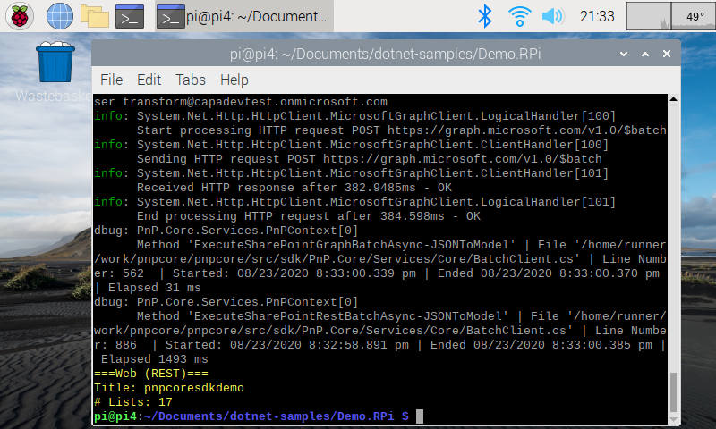

Introduction
This sample demonstrates using the pnp core library running on a Raspberry Pi device.
Source code
You can find the sample source code here: /samples/Demo.RPi
Setup
Hardware
The hardware used:
- Raspberry Pi 4 (4 GB edition)
- HyperPixel 4-inch screen (optional)
Note: this does not imply any limitations or minimal specifications for the apps to run on these types of devices, just a description of the hard used for the project.
Software
The operating system installed on the Raspberry Pi device is: "Raspbian GNU/Linux 10 (buster)"
Before, ASP.NET core application can execute, you must install the ASP.NET Core 3.1 Runtime and SDK.
# Download the script from Microsoft
wget https://dotnet.microsoft.com/download/dotnet-core/scripts/v1/dotnet-install.sh
chmod +x dotnet-install.sh
# Ignore warnings
./dotnet-install.sh --channel Current --architecture arm --install-dir ~/cli
# Allows running dotnet anywhere - thanks to
# this article https://edi.wang/post/2019/9/29/setup-net-core-30-runtime-and-sdk-on-raspberry-pi-4
sudo nano .profile
export DOTNET_ROOT=$HOME/cli
export PATH=$PATH:$HOME/cli
Running the app
Configure your application
Go to GitHub and clone the repoitory in a local folder
Update appsettings.json with the connection details to a demo SharePoint site:
- Configure the user name to use as the value of
CustomSettings:UserPrincipalNamein appsettings.json setting - Configure the password to use as the value of
CustomSettings:Passwordin appsettings.json setting - Configure the URL of a target Microsoft SharePoint Online modern team site collection as the value of
CustomSettings:DemoSiteUrlin appsettings.json setting
To get running:
- Either download this to the Raspberry Pi device directly or FTP the files over from a desktop PC.
- Run in Terminal dotnet build
- Run in Terminal dotnet run
This will then output to the console the communications to SharePoint and the resulting details of the site.
